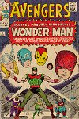
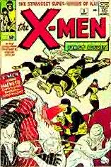
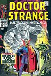
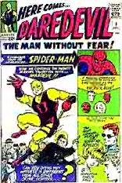
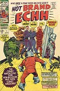

|
|
|
History of
The Marvel Age 1960's Part Two  By September 1963 it was easy enough for Marvel to fulfill Martin Goodman's 1961 wish that his company could publish a comic book as jampacked with popular super heroes ad DC's Justice League. By late 1963, Marvel had super hero stars to spare, and some of them were joined together to form a new super hero group called The Avengers. The original Avengers were Iron Man, Thor, The Hulk, and Ant Man, along with his female partner the Wasp. Including the antisocial Hulk in the group was an odd choice, even for a company that made a specialty of character conflict. He quit in the second issue, but returned in the third to battle the remaining Avengers with the help of the traditionally testy Sub-Mariner.  The X-Men, a comic book series featuring a very different sort of super hero group, made its debut simultaneously with The Avengers in September 1963. Stan Lee had originally wanted to call the team fo teenagers The Mutants, but Martin Goodman felt the name might baffle young readers, so Lee came up with X-Men, which had a nice hint of the unknown about it. The leader of the team was Professor Xavier, a wheelchair-bound telepath who ran a school for gifted youngsters who were all secretly mutants. Feared by ordinary people, The X-Men were nonetheless in training to protect humanity from a gang of evil mutants headed by the sinister Magneto. As the Marvel style continued ot develop, the characters and stories became more and more complex, until not even an entire comic book had enough pages to contain a single adventure. For example, X-Men #4 concluded with a cliff-hanger that went unresolved for two months. Some readers wrote in to complain, suggesting that the serials were merely an artificial marketing device, but the majority found extended narratives to their liking. Gradually, cliff-hangers became the norm. It was yet another Marvel innovation that has become standard in the industry.  Dr. Strange, an unusual hero who soon developed an enthusiastic cult following, achieved prominence by creeping up on it. Initially conceived as a one-shot in the back of Strange Tales #110 (July 1963), Dr Strange subsequently appeared and disappeared from the pages of the comic book that had given him his name. This seemed only proper since, after all, he was a magician. By 1964 his adventures had begun to show up on a regular basis, sharing the pages of Strange Tales with The Human Torch.  Casting about for another super hero with a different problem to overcome, Lee hit on the ultimate drawback for a crime fighter. Drawing upon the idea that the blind are compensated by a heightening of their senses, Lee invented an accident involving radioactive material that left attorney Matt Murdock sightless, but so sensitie in other ways that he could hear heartbeats and read newspapers with his fingertips. This was the only break the character got; his strength and speed were actually no more than those of a trained athlete. Daredevil #1 (April 1964) presented the debut of the blind hero. The name had been used before, for a character introduced by Lev Gleason Publications but abandoned years earlier, and Lee reasoned that it was particularly appropriate for his new "Man Without Fear." Another name from bygone days became associated with the first issue when Bill Everett came on board to draw the story. The creator of the 1939 Sub-Mariner had been working as a commercial artist in Massachusetts, but Lee managed to lure him back to New York and Marvel. Everett soon moved on to other characters, and the red and yellow costume that Everett created of the original Daredevil cover was changed by artist Wally Wood to simpler red tights. The more devilish new costume is the one that ultimately lasted.
The peak of activity during the Marvel Age occurred in 1968. Sales were reported at 50,000,000 copies annually. As a result, the characters who had been allotted only half a comic book were launched in their own titles: The Incredible Hulk, The Invincible Iron Man, Dr. Strange, The Sub-Mariner, Captain America and Nick Fury, Agent of S.H.I.E.L.D. In fact, Marvel was so confident that a year earlier, in 1967, it had launched Not Brand Echh, a monthly comic book devoted to spoofs of the company's own heros. These parodies were frequently written and drawn by the original creators of the characters, but one of the mainstays of the series was Marie Severin, a gifted caricaturist who had worked for years on Marvel's production staff. One of the first women to gain prominence as a comic book artist, she also depicted the adventures of super heroes like The Hulk and Dr. Strange.  Stan Lee tried a couple of experiments while things were hot: for example, he put a high twenty five cent cover price on the unusually long first issue of The Silver Surfer (1968). Beautifully drawn by John Buscema, this comic book represented an attempt to upgrade the medium with a serious character of whom Lee had grown very fond. A month earlier, Lee had put Marvel's most popular hero into a magazine size, black and white format: The Spectacular Spiderman. Unfortunately, its failure after only two issues was an omen of things to come. In the fall of 1968, with Marvel apparently at its peak, Martin Goodman sold the companies he had started in 1932. The buyer was Perfect Film and Chemical Corporation, which soon changed its name to Cadence Industries. Within the Cadence structure, all of Goodman's publishing enterprises were grouped under on company name, Magazine Management, and Goodman continued as president and publisher. Superficially, nothing had changed. By 1969 it was evident that Goodman had picked his time wisely, however, for the entire comic book industry was experiencing a slump. One obvious reason was an increase in the price of an average issue from twelve cents to fifteen cents. In 1969 that represented enough of a jump to discourage many young customers. The slump also represented a natural swing of the pendulum. Business had been on the rise at Marvel for almost a decade. Now the boom was over, and some insiders blamed the comic book companies for expanding too fast and spreading themselves too thin. For the first time in years, Marvel was dropping titles instead of adding them. Not Brand Echh and Dr. Strange were amonge the first cancellations; perhaps the biggest disappointment for Stan Lee was having to drop The Silver Surfer , the philosophical super hero. One title, The X-Men , hung on by its fingernails. Working with writer Roy Thomas, a young artist named Neal Adams infused the group with new life. Even this superior series of stories did not exactly save the The X-Men , but instead of being canceled, the title was continued after March 1970 with reprints of old issues. Someone at Marvel must have looked into a crystal ball and seen that The X-Men was destined to one day become the most popular comic book series published in the United States. RETURN TO THE MARVEL'S MAIN HOME PAGE
|